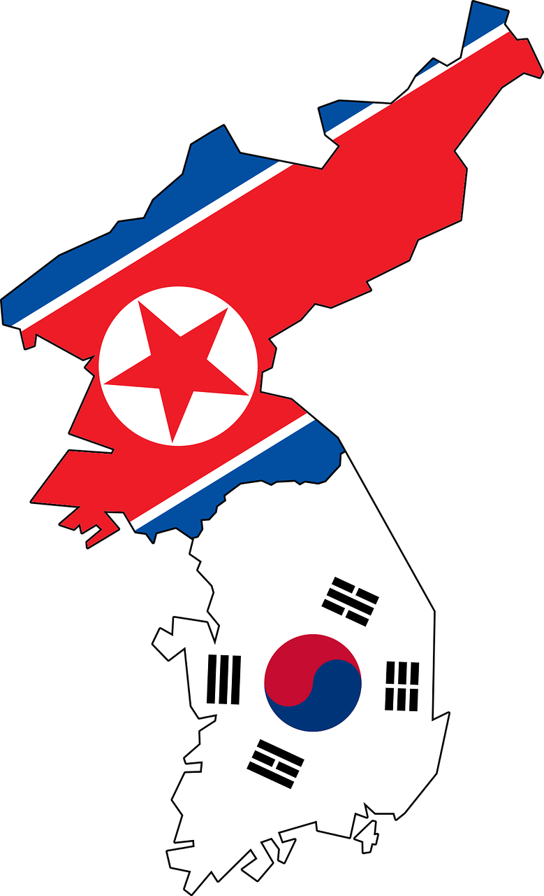
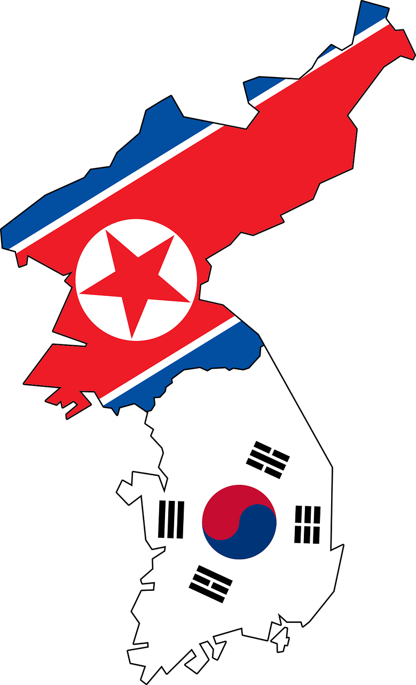

After the armistice of the Korean War, it was divided into South and North Korea. The Korean War officially leads to a "cease of war," not an "end of war," but it is actually an end of war because there has been no battle for over 70 years.
As you can see on the map, Republic of Korea is located south of the ceasefire line. The capital city is Seoul. Korea has three sides of the sea. There's a lot of beaches. For people who like nature more than the city, there's places where you can see the ocean, not Seoul but Busan and Jeju Island. We also recommend going to the area!
Travel to SEOUL!
Top 4 Best Place To Visit
JEJU ISLAND
Special Relax Place To Go
It is an island located in the southern sea of Korea and the largest island in Korea, and is a volcanic island formed by volcanic activities. For this reason, Hallasan Mountain is in the center and there are 370 parasitic volcanoes throughout the island, making it a popular place for many hikers. Since it is a volcanic island, there are many basalt, so you can see many fences made of basalt. DolHarubang, a stone statue handed down from Jeju Island and a symbol of Jeju Island, is made of basalt and has a wide hole, which also shows a rough and affectionate appearance. Dolharubang is Jeju language, meaning "old man stone" when interpreted in standard language. Jeju Island is also nicknamed Tangerine island because it has a lot of tangerines. It is famous as a place where you see dolphins. In addition, Jeju Island belongs to a temperate climate, and even in winter, it rarely falls below zero. Also it's windy, so there are many people to do surfing.
Let me introduce a famous island in Jeju. Udo Island is an island in Jeju Island. The name Udo was given because the island looked like a cow lying down. You have to go in by boat for about 15 minutes. Udo Island, like Jeju Island, has the unique topography of the lava zone and beautiful natural scenery. Because the island is small, you can rent a bicycle or scooter to see the entire island in plenty. You can see Udo Island in full bloom in spring, and on summer nights, you can see the beautiful night view of the fishing boats off Udo Island and the sea. Udo Island is famous for peanuts. Udo peanuts are mostly known, and wherever you go, you can see the unusual scene of selling peanut ice cream, and they also sell makgeolli (traditional Korean liquor) with peanuts.
Hyeopjae Beach, which is famous for its beauty, shows the color of the sea as if emerald paint was slowly dissolved in transparent water. At low tide, the silver sand beach with a lot of shells continues endlessly. In front of the sea, there is a "Biyangdo" in the shape of an elephant picture that swallowed a boa snake in the little prince. Biyangdo Island and the sunset falling over the sea are another spectacular sight to be missed here. In summer, there is also a night opening, so you can enjoy the blue night of Jeju Island under the palm tree. Hyeopjae Beach has a gentle slope, so the depth is shallow, and there is a pine forest, so it is good as a vacation destination for family travelers with children. There are various cafes, restaurants, and accommodations around, so it is the best beach for sightseeing.
READ MOREMUST EAT AND DRINK
Food and Alcohol Recommendations that you must try!
FOOD
Tteokbokki
It is a Korean dish where rice cakes, various vegetables, and ingredients are fried or boiled in red pepper paste seasoning. Along with fried food, ramen, and kimbap, it is one of Korea's representative national snack foods and it is also one of the representative street foods. If you can't eat spicy flavors well, we recommend tteokbokki using seasonings such as soy sauce, ketchup, curry, jajang, and cream sauce.
Samgyeopsal
It is a Korean food that is eaten by grilling the rib-belly part of pork, which has three layers of lean meat and fat. It is common to grill raw pork belly meat on a grill with garlic and kimchi and eat it with vegetables such as lettuce, green onion, red pepper, perilla leaf, grilled kimchi, and onion, along with spices such as soybean paste, red pepper paste, salt, sesame oil, and ssamjang.

Bibimbap
Bibimbap is a traditional Korean food that is eaten with various vegetables in rice and red pepper paste, and it is preferred to put meat together today. Bibimbap can be served as a meat dish or vegetarian dish depending on the region and the ingredients used. People who can't eat spicy food can eat red pepper paste according to their taste.
ALCOHOL
Soju
Soju is the most popular liquor in Korea. Soju is often produced and sold at a variety of different strengths, ranging from about 15% to 50%. For those who hate the bitterness of soju, we also sell fruit soju such as grapefruit, green grape, and peach flavor.
Makgeolli
It is a type of traditional Korean liquor made of rice. There are many people who say that it has a subtle, savory, slightly sweet taste, and a slightly tangy feeling, and tastes like sour soda. Since makgeolli has a 4-6% alcohol content and does not taste bitter, it is important to drink slowly and leisurely because it is easy to drink too much. On a rainy day, try makgeolli with korean style pancake.
Bokbunja-ju
It is a fruit liquor made using raspberry berries and sugar. Bokbunja liquor, called Korean wine, is dark red and sweet, and has an alcohol content of between 15 and 19 percent.